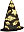

IntroductionTolkien's LanguagesHow to Start ConlangingWord ListsConlang HomeConlangs At A GlanceConlang DirectoriesConlang Yellow PagesTop 200 Conlangs

Updated on August 30, 2005 at 4:51 PM (GMT-5).
FAQ - About Us - Contact Us - Features - Mailing List